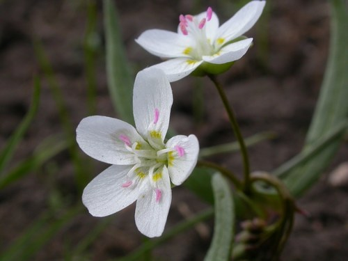

Andrena nigrihirta
Andrena nigrihirta native bee
Mining bees. One of the largest bee genera in the prairies; dozens of species across AB and SK.
4 documented plant relationships.
gathers pollen at
Shooting StarDodecatheon pulchellum Matt Lavin, some rights reserved (CC BY-SA)") YellowbellsFritillaria pudica
YellowbellsFritillaria pudica

Spring BeautyClaytonia lanceolataYellowbellsFritillaria pudica Matt Lavin, some rights reserved (CC BY-SA)")